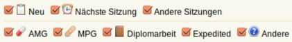

Übersichtsseite¶
Die Übersichtsseite stellt in Form von Boxen alle jüngsten Entwicklungen Ihrer Tätigkeiten sowie die Kommunikation mit der Ethikkommission auf einen Blick dar.
Folgende Boxen befinden sich auf der Übersichtsseite:
Bestimmten Gruppen des Systems werden noch weitere Boxen zur Verfügung gestellt:
Box: Gesendete/Warten auf¶
Hier werden Ihnen Ihre gesendeten, jedoch noch unbeantworteten Nachrichten aufgelistet.
Sie haben die Möglichkeit, die Liste dieser Nachrichten nach bestimmten Kriterien zu sortieren.
Reihenfolge der Sortierung¶
- Studie:
- sortiert die Liste nach den Studien, auf die sich die Nachrichten beziehen.
- Person:
- sortiert die Liste nach den Personen, an die die Nachrichten adressiert wurden. Wenn Sie einmal auf Person klicken, erhalten Sie eine alphabetische Auflistung. Wenn Sie ein weiteres Mal darauf klicken, erhalten Sie eine umgekehrt alphabetische Auflistung (Z, Y, X, W, etc.). Jedes weitere Klicken auf Person wechselt erneut zwischen der alphabetischen und der umgekehrt alphabetischen Auflistung.
- Ältere/Neuere:
- sortiert die Liste nach dem Alter der Nachrichten. Wenn Sie einmal auf Ältere/Neuere klicken, beginnt die Auflistung mit den ältesten Nachrichten. Wenn Sie ein zweites Mal darauf klicken, erhalten Sie eine Auflistung, die mit den neuesten Nachrichten beginnt. Jedes weitere Klicken auf Ältere/Neuere wechselt erneut zwischen der Auflistung nach den ältesten beziehungsweise jener nach den neuesten Nachrichten.
- Weitere:
- Klicken Sie auf Weitere, um auf die Nachrichtenübersicht zu gelangen. Lesen Sie mehr zur Nachrichtenübersicht auf der Hilfe-Seite Nachrichtenübersicht.
Symbole¶
Ungelesene Nachrichten werden mit angezeigt.
Nicht-erledigte Nachrichtenstränge werden mit markiert.
Box: Empfangene/Zu beantworten¶
Hier werden Ihnen neue an Sie adressierte, noch zu beantwortende Nachrichten angezeigt.
Sie haben die Möglichkeit - wie in der Box Gesendete/Warten auf - die Liste dieser Nachrichten nach Studie, Person oder Ältere/Neuere zu sortieren. Klicken Sie auf Weitere, um auf die Nachrichtenübersicht zu gelangen.
Die folgende Box wird nur bestimmten Gruppen des Systems zur Verfügung gestellt:
Box: Studien¶
Interne Benutzer/innen sehen alle eingereichten Studien. Als externe/r Benutzer/in sehen Sie alle selbst eingereichten sowie jene Studien, an denen Sie beteiligt sind.
Symbole¶
Durch werden noch nicht eingereichte, sich in Bearbeitung befindliche Studien markiert.
Wurde die Einreichung einer Studie abgelehnt (z.B. weil Unterlagen fehlen), wird Sie mit angezeigt.
Studien, für die Sie ein Gutachten machen müssen, sind in der Studien-Box mit einem  gekennzeichnet.
gekennzeichnet.
Die folgende Funktion wird nur bestimmten Gruppen des Systems zur Verfügung gestellt:
Filtern der Studien¶
Die erste Zeile zeigt Ihnen alle Studien an, die noch keiner Sitzung zugeordnet sind (Neu), die in die nächste Sitzung kommen (Nächste Sitzung) und jene Studien, die in anderen Sitzungen sind (Andere Sitzungen). Die zweite Zeile ermöglicht Ihnen, die angezeigten Sitzungszuordnungen nach bestimmten Studien (AMG, MPG, Diplomarbeit, Expedited, Andere) zu filtern.
Standardmäßig sind alle Filter aktiv. Wenn Sie einen Filter deaktivieren, werden Ihnen Studien dieser Kategorie nicht angezeigt.
Die folgende Box wird nur bestimmten Gruppen des Systems zur Verfügung gestellt:
Box: Aufgaben¶
Erledigen Sie Ihre Aufgabentätigkeiten in der Box oder im Menüpunkt. Lesen Sie zur Anwendung der Aufgaben-Box in der Hilfe-Seite Aufgabenliste.